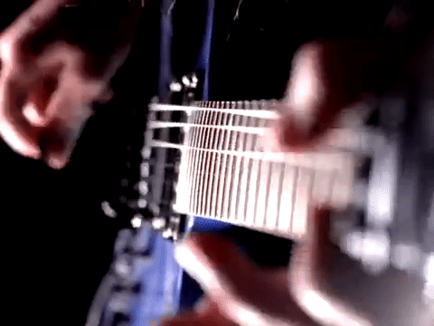
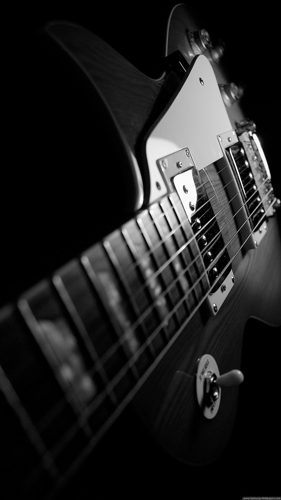

GUITARRA ELECTRICA

HOME
Una Guitarra Eléctrica es un instrumento musical de seis cuerdas normalmente, que utiliza el principio de inducción electromagnética para convertir las vibraciones de sus cuerdas de metal en señales eléctricas. El sonido de la guitarra se verá influido por el diseño y ubicación de las pastillas, la escala y en menor medida por el puente y la cejilla, el uso de los círculos de la escala modificará el sonido de cada una de sus cuerdas.
|  | Hoy en día hay pocas canciones que no tengan una guitarra eléctrica entre sus instrumentos. Es un instrumento armónico y melódico de seis cuerdas que utiliza el principio de inducción electromagnética para convertir las vibraciones de las cuerdas en señales eléctricas, que terminan por convertirse en sonido. El sonido de la guitarra depende además de otros factores, como las pastillas, la escala, el puente o la cejilla. Aunque su historia es todavía más curiosa. |
|---|---|
Sonido Guitarra Electrica |
Video |